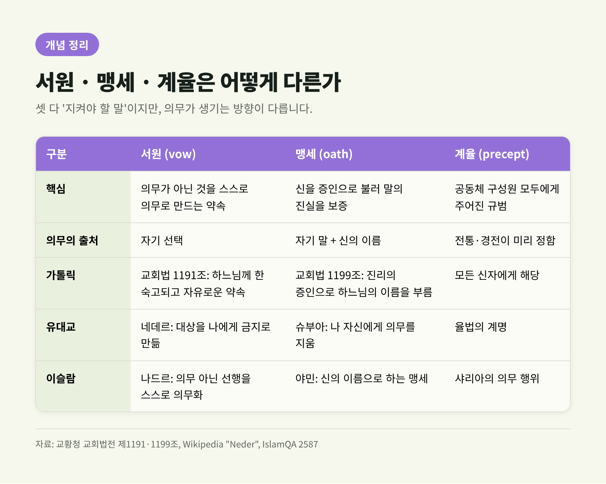
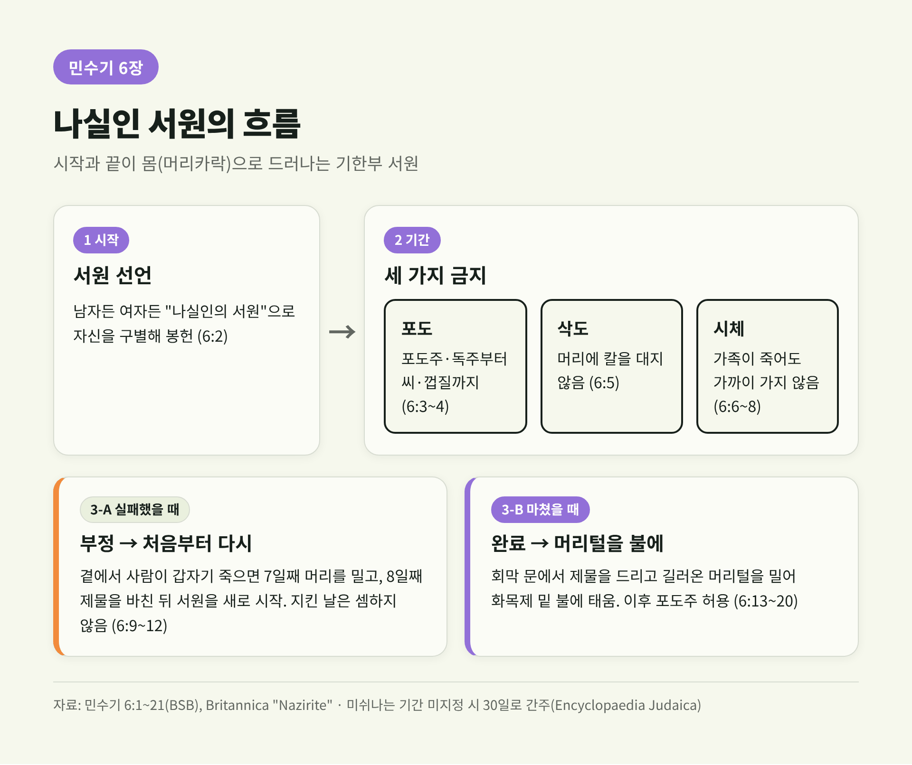
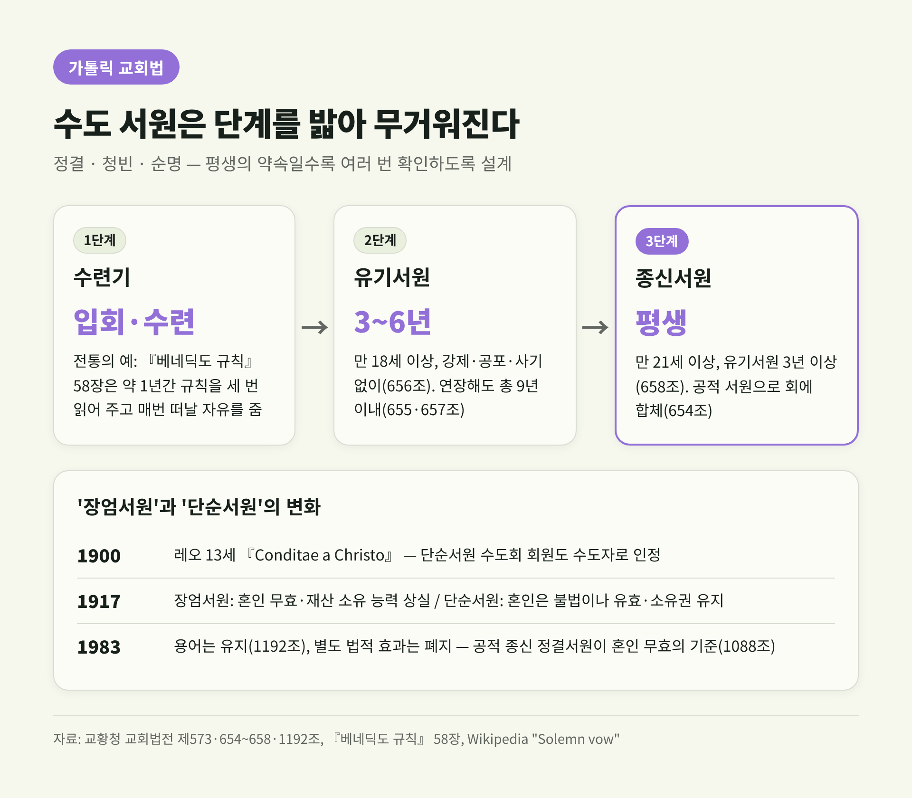
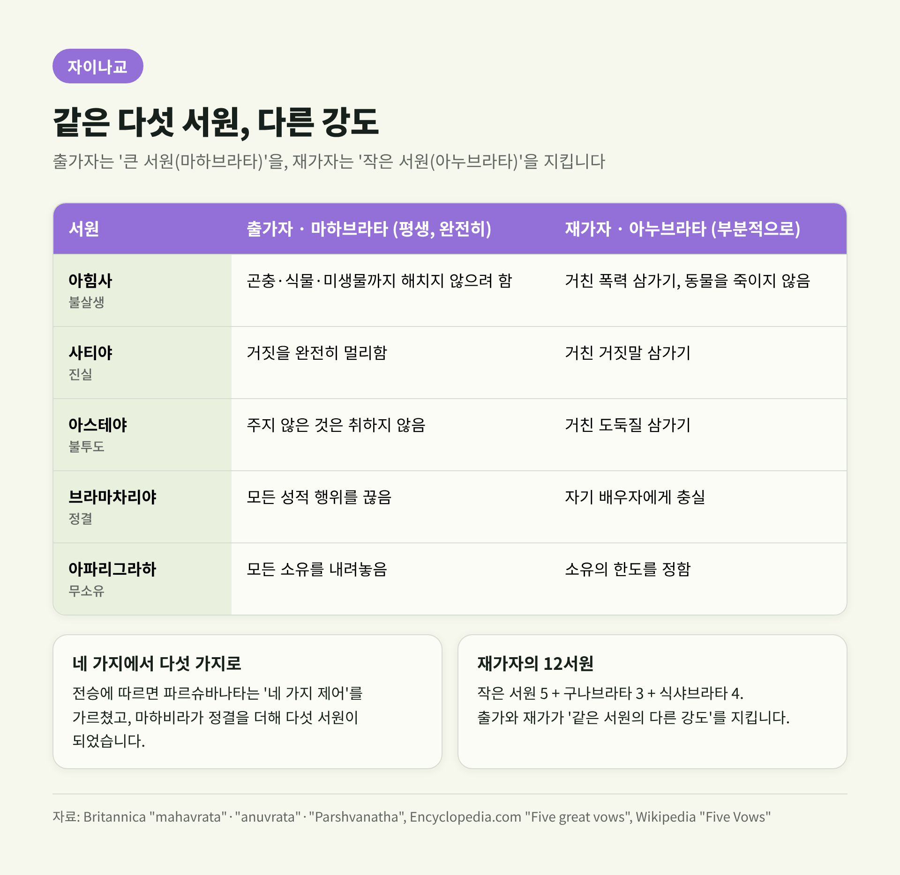
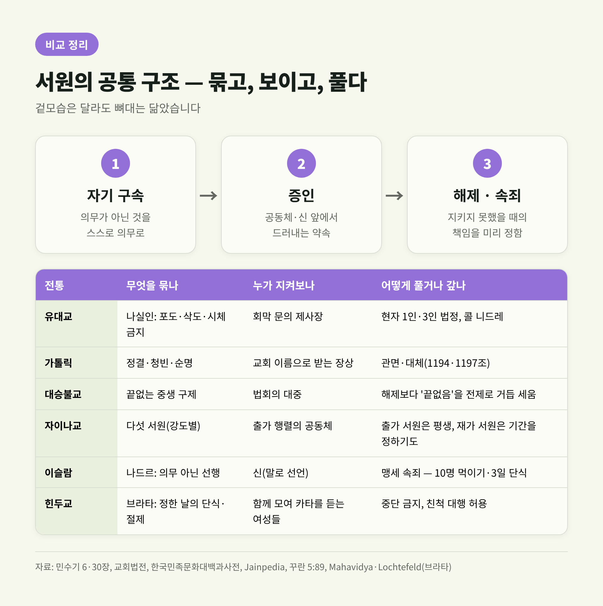

서원의 비교종교학 — 나실인·보살·수도자는 왜 스스로를 약속으로 묶었을까
이번 글에서는 '서원(誓願)'이라는 행위를 여러 종교 전통에 걸쳐 비교해 보겠습니다. 히브리 성서의 나실인, 가톨릭 수도자, 대승불교의 보살, 자이나교 출가자, 이슬람의 나드르, 힌두의 브라타를 차례로 살핍니다. 어느 신앙이 옳은지를 따지려는 것이 아닙니다. 사람들이 왜, 그리고 어떤 방식으로 스스로를 약속에 묶어 왔는지를 종교학의 눈으로 정리하려 합니다.
먼저 결론부터 말씀드리면, 전통마다 내용은 달라도 서원에는 세 가지 공통 뼈대가 있습니다. 의무가 아닌 것을 스스로 의무로 만드는 '자기 구속', 그 약속을 지켜보는 '증인', 그리고 약속을 풀거나 갚는 '해제 절차'입니다.
■ 서원과 맹세는 무엇이 다른가
일상에서는 서원과 맹세를 섞어 씁니다. 그러나 여러 전통의 법체계는 둘을 꽤 엄격하게 구분합니다.
가톨릭 교회법 제1191조는 서원을 "가능하고 더 나은 선에 관하여 하느님께 한 숙고되고 자유로운 약속"이라고 정의합니다. 반면 제1199조의 맹세는 "진리의 증인으로 하느님의 이름을 부르는 것"입니다. 서원은 신에게 무언가를 바치겠다는 약속이고, 맹세는 신을 증인으로 세워 내 말의 진실성을 보증하는 행위인 셈입니다.
유대법도 비슷한 선을 긋습니다. '네데르(neder)'는 어떤 대상을 나에게 금지된 것으로 만드는 서원이고, '슈부아(shevuah)'는 나 자신에게 의무를 지우는 맹세입니다. 이슬람에서도 스스로 의무를 만드는 '나드르(nadhr)'와 신의 이름으로 하는 맹세 '야민(yamin)'이 다른 범주로 다뤄집니다.
브리태니커는 서원을 "통상적인 사회적·종교적 요구를 넘어서는 의무"에 자신을 바치는 신성하고 자발적인 약속으로 설명합니다. 핵심은 '넘어선다'는 데 있습니다. 누구나 지켜야 하는 계율과 달리, 서원은 하지 않아도 되는 일을 스스로 짊어지는 선택입니다.

■ 나실인 서원 — 몸에 새기는 기한부 헌신
히브리 성서 민수기 6장은 서원이 어떻게 '제도'가 되는지를 잘 보여줍니다. 남자든 여자든 "나실인의 서원"을 할 수 있었고(민 6:2), 이름은 '분리하다·봉헌하다'라는 뜻의 히브리어 어근에서 왔습니다.
나실인에게는 세 가지 금지가 따랐습니다.
- 포도주와 독주는 물론 포도즙, 생포도, 건포도, 씨와 껍질까지 포도나무에서 난 것은 먹지 않습니다(6:3~4).
- 서원 기간에는 "삭도를 그 머리에 대지" 않습니다(6:5).
- 부모나 형제가 죽어도 시체에 가까이 가지 않습니다(6:6~8).
흥미로운 것은 실패했을 때의 규정입니다. 곁에서 누군가 갑자기 죽어 부정해지면, 7일째 머리를 밀고 8일째 제물을 바친 뒤 서원을 처음부터 다시 시작합니다. 그때까지 지킨 날은 셈하지 않습니다(6:9~12).
기간을 마치면 회막 문에서 제물을 드리고, 길러온 머리털을 밀어 화목제 밑의 불에 태웁니다(6:13~20). 그 뒤에야 다시 포도주를 마실 수 있습니다. 서원의 시작과 끝이 몸, 곧 머리카락으로 눈에 보이게 표시되는 구조입니다.
옛 전승 속 삼손과 사무엘은 평생 나실인으로 그려집니다. 사무엘의 어머니 한나는 아들을 주시면 평생 바치고 "삭도를 그 머리에 대지 않겠다"고 서원했습니다(삼상 1:11). 후대에는 기한을 정한 서원이 일반적이 되었고, 미쉬나는 기간을 말하지 않으면 30일로 보았습니다.
다만 랍비 전통이 나실인을 마냥 칭송한 것은 아닙니다. 『유대 백과(Encyclopaedia Judaica)』 계열의 해설에 따르면 랍비들은 금욕이 유대교의 정신과 어긋난다며 대체로 권하지 않았습니다. 민수기 6:11의 '속죄'를 근거로 나실인을 '죄인'이라 부른 견해도 있었습니다. 제2성전이 무너진 뒤 이 관습은 점차 사라져 중세 문헌에는 거의 보이지 않습니다.
성서 자체도 서원에 신중합니다. 신명기 23장은 서원했다면 지체 없이 갚되 "서원하지 않으면 죄가 없다"고 하고, 전도서 5:5는 "서원하고 갚지 않는 것보다 서원하지 않는 것이 낫다"고 말합니다.

■ 서원을 푸는 법 — 콜 니드레를 둘러싼 오랜 논쟁
약속에 묶이는 법이 있다면 풀리는 법도 있어야 합니다. 유대 전통의 '하타라트 네다림(서원 해제)'이 그 장치입니다.
율법에 밝은 현자 한 사람이나 성인 남자 세 사람이 법정 역할을 맡습니다. 해제를 청하는 사람에게 왜 풀고 싶은지를 묻고, 정당한 사유가 있을 때 "네게 허락되었다"고 선언합니다. 오늘날에도 새해 명절 로시 하샤나 전날에 이 절차를 행하는 관습이 있습니다.
민수기 30장은 고대의 또 다른 해제 방식을 전합니다. 아버지 집에 있는 딸이나 남편 있는 아내의 서원은, 아버지나 남편이 '들은 그날' 반대하면 무효가 되었습니다. 반면 과부와 이혼한 여성의 서원은 그대로 유효했습니다. 오늘의 눈으로 보면 가부장적 구조이지만, 서원이 개인만의 일이 아니라 가족과 공동체의 승인 속에 있었음을 보여주기도 합니다.
랍비들도 이 해제 규정이 성서에 근거가 많지 않다는 점을 알았습니다. 미쉬나 하기가 1:8은 서원 해제의 규정이 "공중에 떠 있어 기댈 곳이 없다"고 표현합니다.
이 긴장이 가장 선명하게 드러난 것이 '콜 니드레(Kol Nidre, 모든 서원)'입니다. 대속죄일 욤 키푸르 저녁, 해가 지기 직전에 회당에서 낭송하는 아람어 선언문입니다. 기도라기보다 선언에 가깝고, 칸토르가 세 번 되풀이합니다.
콜 니드레의 기원은 분명하지 않습니다. 8세기 바빌로니아 학자(게오님)들의 응답서에 처음 언급되고, 현존하는 가장 이른 본문은 9세기 아므람 가온의 기도서에 실려 있습니다. 당시에도 반대가 적지 않아, 아므람 가온은 이를 어리석은 관습이라고까지 했습니다.
12세기 프랑스·독일에서는 큰 변화가 생겼습니다. 메이르 벤 사무엘과 그 아들 라베누 탐 무렵, 대상이 '지난 1년의 서원'에서 '다가올 1년의 서원'으로 바뀐 것입니다. 누가 고쳤고 누가 옹호했는지는 자료마다 설명이 조금 다릅니다. 이 미래형 문구가 아슈케나지 전통의 표준이 되었습니다.
중요한 단서가 하나 있습니다. 콜 니드레가 푸는 것은 사람과 신 사이의 서원뿐입니다. 다른 사람, 법정, 비유대인과 맺은 약속은 대상이 아닙니다. 1240년 파리 논쟁에서 랍비 예히엘이 바로 이 점을 들어 변론했습니다.
그럼에도 기독교 쪽에서는 이것을 "유대인의 맹세는 믿을 수 없다"는 근거로 삼았습니다. 일부 지역에서는 유대인에게만 '모레 유다이코'라는 특별한 법정 맹세를 강요했습니다. 1844년 독일 개혁파 랍비 회의는 콜 니드레가 필수적이지 않다며 빼자고 권고했지만, 미국 개혁파는 1961년 기도서에서 아람어 전문을 되살렸습니다.
강제 개종을 당한 유대인들이 마음속 약속을 지키려 만들었다는 설명도 널리 알려져 있습니다. 다만 이는 20세기 초에 제기된 가설이며, 근거가 부족하다는 평가도 함께 있습니다.
미국 유대신학교(JTS)의 해설은 콜 니드레를 인간의 연약함을 인정하는 동시에 "말의 무게"를 되새기는 의례로 읽습니다. 해제 절차가 오히려 약속을 가볍게 여기지 말라는 경고가 된다는 해석입니다.
■ 가톨릭 수도 서원 — 청빈·정결·순명, 그리고 단계
가톨릭 수도자는 정결·청빈·순명이라는 세 가지 '복음적 권고'를 서원합니다(교회법 573조). 정결은 독신 안의 완전한 금욕(599조), 청빈은 재화를 회의 규정에 따라 제한해 쓰는 삶(600조), 순명은 정당한 장상에게 의지를 맡기는 것(601조)입니다.
눈여겨볼 것은 서원이 한 번에 이루어지지 않는다는 점입니다. 수련기를 마친 뒤 먼저 3~6년의 유기서원을 하고(655조), 유기서원은 연장하더라도 총 9년을 넘을 수 없습니다(657조). 종신서원은 만 21세 이상, 유기서원 3년 이상을 거쳐야 가능합니다(658조). 강제나 중대한 공포, 사기로 한 서원은 무효입니다(656조). 평생의 약속일수록 천천히, 여러 번 확인하도록 설계되어 있습니다.
이 '점진성'은 오래된 전통입니다. 몬테카시노의 베네딕도(약 480~550)가 수도자들을 위해 엮은 『베네딕도 규칙』 58장은 지원자를 쉽게 받지 말라고 합니다. 수련자에게는 2개월, 6개월, 4개월 뒤에 규칙을 세 번 읽어 주고, 그때마다 떠날 자유를 줍니다. 마지막에 공동체 앞에서 정주, 생활의 전환, 순명을 서약하고, 자필 청원서를 제대 위에 올려놓습니다. 베네딕도회의 서원이 '청빈·정결·순명'과 다른 형식이라는 점도 흥미롭습니다.
'장엄서원'과 '단순서원'의 구분도 서원의 무게를 법적으로 다룬 사례입니다. 1917년 교회법에서 장엄서원자는 혼인이 무효였고 재산 소유 능력도 잃었습니다. 단순서원자의 혼인은 불법이지만 유효했고, 재산의 소유권도 유지했습니다. 1900년 레오 13세의 헌장 『Conditae a Christo』가 단순서원 수도회 회원도 수도자로 인정하면서 구분은 점차 의미를 잃었습니다. 1983년 교회법은 두 용어를 남겨 두되(1192조) 별도의 법적 효과는 없앴습니다. 지금은 장엄 여부보다 '공적 종신 정결서원'이 혼인을 무효로 하는 기준이 됩니다(1088조).
해제 장치도 있습니다. 교회법 1194조는 기한 경과, 조건 결여, 관면, 대체로 서원이 끝날 수 있다고 정하고, 1197조는 "더 낫거나 같은 선"으로 바꿀 수 있게 합니다.
물론 그리스도교 안에서도 수도 서원에 대한 평가는 하나가 아닙니다. 루터는 1521년 말 『수도 서원에 관하여』에서 서원이 혼인이라는 창조 질서를 거스르고, 행위로 의로움을 얻으려는 태도를 낳는다고 비판했습니다. 그렇다고 루터파가 서원 자체를 모두 부정한 것은 아닙니다. 아우크스부르크 신앙고백 변증서는 "정당한 서원은 지켜야 한다"고 하면서, 서원이 구원의 공로가 된다는 생각만을 거부했습니다. 퀘이커는 한 걸음 더 나아가 마태복음 5장 "도무지 맹세하지 말라"를 근거로 법정 맹세까지 거부했습니다. 말은 맹세할 때만이 아니라 언제나 참되어야 한다는 이유에서입니다.

■ 보살의 서원 — 끝이 없어서 세우는 약속
대승불교에서 서원은 전혀 다른 결을 띱니다. 보살 서원(산스크리트 praṇidhāna, '열망·결심')은 모든 중생을 위해 붓다가 되겠다는 약속입니다. 출가자의 계율(별해탈계)은 목숨이 다하면 끝난다고 보지만, 보살 서원은 다음 생까지 이어진다고 봅니다.
한국 불교 법회는 삼귀의로 시작해 사홍서원으로 끝을 맺습니다. 한국민족문화대백과사전이 전하는 네 구절은 이렇습니다.
- 중생무변서원도(衆生無邊誓願度) — 중생이 끝없어도 다 건지겠습니다.
- 번뇌무진서원단(煩惱無盡誓願斷) — 번뇌가 다함없어도 다 끊겠습니다.
- 법문무량서원학(法門無量誓願學) — 법문이 한량없어도 다 배우겠습니다.
- 불도무상서원성(佛道無上誓願成) — 불도가 위없어도 반드시 이루겠습니다.
모든 보살이 함께 세운다고 해서 '총원(總願)'이라고도 부릅니다. 이 형식은 동아시아에서 천태 지의의 문헌을 통해 정형화된 것으로 알려져 있고, 사성제(고·집·멸·도)에 대응시키는 해석도 있습니다. 일본 선원에서는 좌선 끝에 세 번 외웁니다.
여기서 비교의 묘미가 생깁니다. 나실인의 서원은 기한이 있고, 지켰는지 아닌지가 분명합니다. 사홍서원은 '끝없는' 중생과 번뇌를 대상으로 합니다. 처음부터 다 이룰 수 없음을 알고 세우는 서원입니다. 백과사전 설명도 현실적으로 불가능해 보여도 서원을 세우고 실천하는 것 자체가 보살의 길이라고 정리합니다.
정토 전통의 법장비구 이야기는 서원의 '조건문 구조'를 잘 보여줍니다. 『무량수경』에서 아미타불은 과거에 보살 법장(Dharmākara)으로서 여러 원을 세웠습니다. 각 원은 "내가 부처가 될 때 ~하지 못한다면, 나는 정각을 취하지 않겠습니다"라는 형식을 취합니다. 자기 깨달음을 담보로 남을 위한 조건을 거는 셈입니다.
가장 중시되는 제18원은 시방의 중생이 지극한 마음으로 믿고 극락에 나기를 원해 열 번 이름을 부르면 태어나게 하겠다는 원입니다. 단 오역죄를 지은 자와 정법을 비방한 자는 제외한다는 단서가 붙습니다. 일본의 호넨은 이 원을 '본원 중의 왕'이라 불렀고, 신란은 이 본원에 대한 신심을 중심에 두었습니다.
원의 개수는 판본마다 다릅니다. 한역본은 48원이지만 산스크리트본은 46원이고, 24원 계통의 판본도 있습니다. '48원'은 동아시아에서 널리 쓰인 한역본의 숫자라고 보시면 정확합니다.
■ 자이나교 — 같은 서원, 다른 강도
자이나교는 '서원의 강도'를 제도로 나눈 드문 사례입니다. 출가자는 다섯 가지 '큰 서원(마하브라타)'을 평생 지킵니다. 불살생(아힘사), 진실(사티야), 불투도(아스테야), 정결(브라마차리야), 무소유(아파리그라하)입니다. 브리태니커에 따르면 출가자의 불살생은 곤충과 식물, 미생물까지 해치지 않으려는 수준에 이릅니다.
전승에 따르면 처음부터 다섯 가지였던 것은 아닙니다. 마하비라보다 약 250년 앞선 파르슈바나타는 불살생·불투도·불망어·무소유의 '네 가지 제어'를 가르쳤고, 마하비라가 정결을 더해 다섯이 되었다고 합니다.
재가 신자는 같은 다섯 서원을 '작은 서원(아누브라타)'으로 지킵니다. 거친 폭력과 거짓, 도둑질을 삼가고, 배우자에게 충실하며, 소유를 제한하는 식입니다. 여기에 보조 서원 일곱 가지를 더해 모두 12서원 체계를 이룹니다. 출가와 재가가 '다른 계율'이 아니라 '같은 서원의 다른 강도'를 지키는 구조라는 점이 특징입니다.
출가 의식인 디크샤는 서원이 공동체의 사건임을 보여줍니다. 지원자는 신부처럼 차려입고 가마에 올라 행렬하며 돈과 선물을 뿌립니다. 머리털을 손으로 뽑고 새 이름을 받으며, 빗자루와 입가리개를 받습니다. 무소유 서원을 했기에 이 도구들조차 '자기 것'이 아닌 것으로 여겨집니다.

■ 이슬람의 나드르와 힌두의 브라타 — 서원을 경계하거나, 일상에 들이거나
이슬람은 서원을 인정하되 경계합니다. 꾸란 76:7은 의로운 이들을 "서원을 지키는" 사람으로 칭찬합니다. 꾸란 3:35에는 이므란의 아내가 태중의 아이를 신께 바치겠다고 서원하는 장면이 있습니다. 사무엘상의 한나와 구조가 무척 닮았습니다.
그런데 하디스는 결이 조금 다릅니다. 부하리 6694는 서원이 신이 정하지 않은 것을 가져오지는 못하고, 다만 인색한 사람이 재물을 내놓게 할 뿐이라고 전합니다. 이 때문에 서원을 '권장하지 않는 행위'로 보는 법학 견해가 많습니다. '신과 거래하는' 태도를 경계한 것으로 풀이됩니다.
내용에 대한 기준도 분명합니다. "신께 순종하기로 서원한 자는 순종하고, 불순종하기로 서원한 자는 불순종하지 말라"(부하리 6700). 죄가 되는 서원은 지켜서는 안 된다는 뜻입니다.
해제와 속죄 규정은 꾸란 5:89에 나옵니다. 경솔하게 한 맹세는 묻지 않지만, 의도한 맹세를 어기면 가난한 사람 열 명을 먹이거나 입히고, 그럴 형편이 안 되면 사흘을 단식합니다. 서원을 지키지 못했을 때도 이 맹세의 속죄(카파라)를 따른다는 견해가 널리 받아들여집니다. 다만 세부는 학파마다 다릅니다. 시아파 법해설은 서원을 반드시 "신을 위해"라는 말로 해야 하고 분노 중 의도 없이 한 서원은 무효라고 보며, 서원과 구별되는 '언약'을 어기면 더 무거운 속죄를 요구합니다.
힌두의 브라타(vrata)는 반대로 서원을 일상 깊숙이 들여왔습니다. 산스크리트 '브라타'는 리그베다에만 200번 넘게 나오는 오래된 말로, 베다 시대에는 우주 질서(리타)와 연결된 개념이었습니다. 후대에는 정해진 날 음식과 행동을 스스로 제한하는 사적인 서원 의례가 되었고, 사제 없이 집에서 행하는 경우도 많습니다.
브라타는 흔히 단식, 신에 대한 예배(푸자), 그 브라타의 유래담(카타) 듣기, 보시로 이루어집니다. 한 번 시작하면 중간에 그만두지 않는 것이 원칙이고, 아프거나 늙은 경우 가까운 친척이 대신하기도 합니다.
예를 들어 북인도의 기혼 여성들은 카르티카월 하현 넷째 날(양력 10월 무렵) '카르바 차우트'를 지킵니다. 새벽부터 달이 뜰 때까지 물과 음식을 끊고 남편의 장수를 빕니다.
해석은 엇갈립니다. 학자 앤 피어슨이 만난 여성들은 브라타를 "마음의 평안"을 주는 것, 사랑하는 이에 대한 의무로 설명했습니다. 베다 제사가 상층 남성에게 한정되었던 것과 달리 브라타는 여성에게 열린 종교적 실천이었다는 평가도 있습니다. 반면 남편은 비슷한 단식을 하지 않는다는 점에서 젠더 위계를 반영한다는 비판도 있습니다. '이론상 자발적'인 서원이 사회적 기대가 될 때 생기는 긴장입니다.
■ 공통 구조 — 자기 구속, 증인, 해제
이제 여섯 전통을 나란히 놓아 보겠습니다. 겉모습은 머리카락, 수도복, 염불, 입가리개, 단식으로 제각각입니다. 그러나 뼈대는 놀랄 만큼 닮았습니다.
첫째, 자기 구속입니다. 서원은 의무가 아닌 것을 의무로 만듭니다. 그래서 거의 모든 전통이 '자유롭게, 숙고하여' 해야 한다는 조건을 붙입니다. 강요된 서원은 가톨릭에서도 이슬람 시아파 법해설에서도 무효입니다.
둘째, 증인입니다. 나실인은 회막 문에서, 베네딕도회 수도자는 공동체 앞 제대에서, 자이나 출가자는 행렬 속에서 서원을 드러냅니다. 가톨릭은 장상이 교회의 이름으로 받아들인 서원을 '공적 서원'이라 부릅니다(1192조). 서원은 신과 나 사이의 일이면서 동시에 공동체가 함께 기억하는 사건입니다.
셋째, 해제와 속죄입니다. 유대교의 3인 법정과 콜 니드레, 가톨릭의 관면과 대체, 이슬람의 카파라가 모두 이 자리에 있습니다. 약속을 깨는 것을 허락하는 제도가 아닙니다. 지키지 못한 약속을 어떻게 책임질지 미리 정해 둔 장치에 가깝습니다.
예전엔 서원이 주로 신과의 '거래'처럼 이해되기도 했습니다. 오늘의 종교학은 서원이 개인과 공동체에 무슨 일을 하는지에 더 주목합니다.

■ 종교학은 서원을 어떻게 설명할까
첫 번째 틀은 통과의례입니다. 프랑스 인류학자 아르놀드 반 헤네프는 1909년, 의례가 분리–전이–통합의 세 단계를 거친다고 보았습니다. 가운데 단계는 라틴어 '문턱(limen)'에서 딴 이름으로, 이전 지위도 새 지위도 아닌 상태입니다. 나실인의 서원 기간, 유기서원 기간이 바로 그런 문턱에 해당합니다. 머리털을 태우거나 종신서원을 하는 순간은 새 지위로 돌아오는 통합의 의례로 읽을 수 있습니다.
두 번째 틀은 '값비싼 신호 이론'입니다. 종교 인류학자 리처드 소시스는 지키기 어려운 요구일수록 구성원의 헌신을 믿을 만하게 보여주는 신호가 된다고 봅니다. 그와 브레슬러는 2003년 19세기 미국 공동체 83곳을 분석해, 종교 공동체는 요구가 많을수록 오래 지속되었지만 세속 공동체에서는 그런 관계가 보이지 않았다고 보고했습니다. 흉내 내기 어려운 서원은 "나는 진심이다"라는 말을 대신해 주는 셈입니다.
다만 이 설명에도 한계가 있습니다. 연구자 조지프 헨릭은 2009년, 값비싼 행동이 다른 사람에게 헌신을 알리는 신호이기보다, 배우는 사람에게 그 믿음이 진짜임을 보여주는 장치라고 보았습니다. 2022년 『신테제(Synthese)』에 실린 논문은 두 이론을 경쟁 관계보다 보완 관계로 보면서, 신호 이론의 비용·편익을 실제로 측정한 자료가 부족하다는 점도 지적합니다. 어느 한 이론이 서원의 모든 면을 설명한다고 보기는 어렵습니다.
그리고 이 이론들은 서원을 하는 사람들이 스스로 말하는 의미, 곧 신앙과 헌신의 언어를 대신하지 않습니다. 종교학의 설명은 바깥에서 본 한 겹의 해석일 뿐입니다.
정리하면 이렇습니다. 서원은 사람이 자기 미래를 오늘의 말로 묶어 두는 기술입니다. 나실인은 머리카락으로, 수도자는 단계를 밟는 서약으로, 보살은 끝없는 대상으로, 자이나 출가자는 내려놓은 소유로 그 약속을 드러냈습니다. 그리고 거의 모든 전통이 동시에 그 약속을 풀거나 갚는 길을 마련해 두었습니다.
"묶는 법과 푸는 법은 늘 함께 있었다."
사람이 왜 굳이 스스로를 약속에 묶었느냐고 물으신다면, 흔들리는 마음보다 오래 가는 무언가가 필요했기 때문이라고 답하고 싶습니다.
참고자료
- 브리태니커, "Nazirite" — https://www.britannica.com/topic/Nazirite
- 민수기 6장(BSB) — https://biblehub.com/bsb/numbers/6.htm
- Encyclopedia.com, "Nazirite" — https://www.encyclopedia.com/religion/encyclopedias-almanacs-transcripts-and-maps/nazirite
- 민수기 30장(USCCB) — https://bible.usccb.org/bible/numbers/30
- Jewish Virtual Library, "Kol Nidrei" — https://www.jewishvirtuallibrary.org/kol-nidrei
- JTS, "The Meaning of Kol Nidre" — https://www.jtsa.edu/torah/the-meaning-of-kol-nidre/
- Peninei Halakha, "Hatarat Nedarim" — https://ph.yhb.org.il/en/15-05-11/
- 교황청, 교회법전 제1191~1204조 — https://www.vatican.va/archive/cod-iuris-canonici/eng/documents/cic_lib4-cann1191-1204_en.html
- 교황청, 교회법전 제573~606조 — https://www.vatican.va/archive/cod-iuris-canonici/eng/documents/cic_lib2-cann573-606_en.html
- 교회법전 제654~658조(IntraText) — https://www.intratext.com/IXT/ENG1104/_P27.HTM
- 『베네딕도 규칙』 58장 — https://pressbooks.palni.org/ruleofbenedict/chapter/rb-58/
- Book of Concord, 변증서 27조 — https://bookofconcord.org/defense/of-monastic-vows/
- 한국민족문화대백과사전, "사홍서원" — https://encykorea.aks.ac.kr/Article/E0026116
- Stanford Encyclopedia of Philosophy, "Japanese Pure Land Philosophy" — https://plato.stanford.edu/entries/japanese-pure-land/
- SBE 49, Larger Sukhāvatī-vyūha — https://sacred-texts.com/bud/sbe49/sbe4925.htm
- 브리태니커, "mahavrata" — https://britannica.com/topic/mahavrata
- 브리태니커, "anuvrata" — https://www.britannica.com/topic/anuvrata
- 브리태니커, "Parshvanatha" — https://www.britannica.com/biography/Parshvanatha
- Jainpedia, "Becoming a monk or nun" — https://jainpedia.org/themes/practices/monks-and-nuns/becoming-a-monk-or-nun
- Quran.com 5:89 — https://quran.com/5/89
- Sunnah.com, 부하리 6694 — https://sunnah.com/bukhari:6694
- IslamQA 2587 — https://islamqa.info/en/answers/2587/types-of-vows-in-islam
- Sistani.org, Islamic Laws — https://www.sistani.org/english/book/48/8232/
- Lochtefeld, 『Illustrated Encyclopedia of Hinduism』 "Vrat" — https://vishvasa.github.io/AgamaH/AryaH/hinduism/sAmya-vaiShamye/articles/lochtefeld_hinduism-encyclopedia/entries/V/Vrat
- Mahavidya, "The Karva Chauth Vrata" — https://mahavidya.ca/2015/06/26/the-karva-chauth-vrata/
- 브리태니커, "rite of passage" — https://www.britannica.com/topic/rite-of-passage
- Sosis & Bressler(2003), Cross-Cultural Research — https://www.ovid.com/journals/ccres/pdf/10.1177/1069397103037002003~cooperation-and-commune-longevity-a-test-of-the-costly
- Brusse·Handfield·Zollman(2022), Synthese — https://link.springer.com/article/10.1007/s11229-022-03742-7